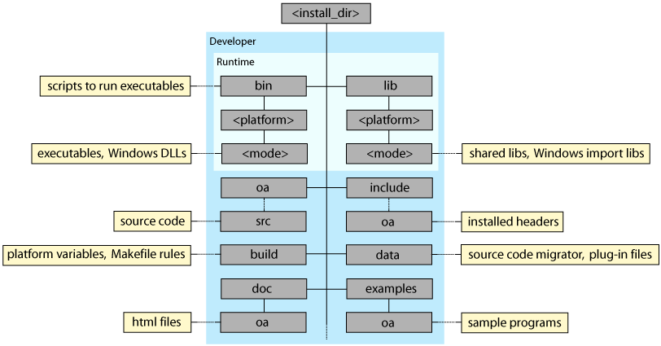
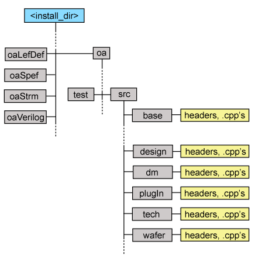

|
 |
 |
||||||
|
|
|
||||||
This document will help you migrate to the OpenAccess 2.2 release. It covers:
The following figure shows the main components of the OpenAccess 2.2 installation hierarchy:

The <platform> names now better represent the OpenAccess hardware and operating system options, and are of the form:
<os_name>_<os_version>[_<hardware_arch>]
Also, the mode directories let you mix libraries built for various purposes, such as debug or optimized versions. You might use this approach to compile with gcc versus a native version.
The OpenAccess source has been reorganized and the directory names have been simplified. In addition:
oa/oaDMTurbo. oa directory.
OpenAccess provides several capabilities to help migrate your data to the 2.2 release. These are described in the sections that follow:
OpenAccess provides a library migration tool, oa20to22, that lets you create an OpenAccess 2.2 design library from an OpenAccess 2.0.x design library.
oa20to22 translates all of your OpenAccess databases in the 2.0 library format to databases in the 2.2 library format. Note that the databases that were called “CellViews” in 2.0 are now called “Designs” in 2.2. oa20to22 will translate all 2.0 cellViews to 2.2 designs, all 2.0 tech databases to 2.2 tech databases, and all library properties to the new 2.2 format.
Data model changes are handled on a case by case basis. See Automatically Updating 2.0.x Libraries to 2.2 for more information.
Where your design data uses the data model of the standard formats supported by the OpenAccess translators, it is also possible to dump your libraries to these formats using the 2.0 translators and to read them back in using the 2.2 version of the translators.
See the following documents for more information:
OpenAccess provides a source code migrator, oa20to22src, to help migrate your application source code to 2.2. The migrator addresses many of the required changes:
See Migrating Your 2.0 Applications to OpenAccess 2.2 for specifics about how to use oa20to22src and the results to expect.
There are manual steps you that need to perform in addition to running the source code migrator. Some changes cannot be automated. For example, the way that routes are handled is different in 2.2 because vias and segments are now managed objects. Programmers need to adjust their code accordingly.
The best source of information about the manual code changes are reflected in this set of What's New in OpenAccess 2.2 documents.
The process for completing this part of the migration will involve updating your code, compiling, and making fixes, until the code compiles correctly.

Copyright © 2003-2010 Cadence Design Systems, Inc.
All rights reserved.